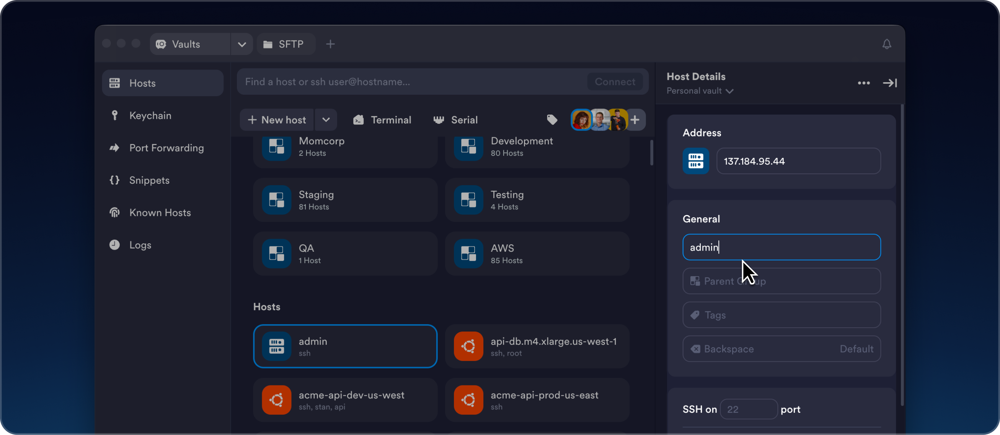

Termius 凭什么把 SSH 客户端做成付费产品？拆解它的 Vaults 架构
SSH 客户端同质化严重，PuTTY、Xshell、Windows Terminal 都能连服务器。Termius 却敢卖 Pro 版，核心不在终端模拟而在一套加密凭证管理体系——Vaults。本文拆解它的设计原理、同步机制与技术取舍。
为什么一个 SSH 客户端敢收 Pro 费
如果只看"连服务器"这件事，SSH 客户端根本不缺——PuTTY 免费、Xshell 好用、Windows Terminal 原生支持，甚至浏览器里都能开 WebSSH。Termius官网凭什么从 Starter 免费版往上设 Pro 档，还真有人付费？
答案不在终端窗口里。Termius 的核心竞争力其实是一套叫 Vaults 的架构——它把 SSH 凭证管理、跨设备同步、命令片段、端口转发规则这些"运维上下文"全部收拢到一个加密保险库里。终端只是 Vaults 体系的输入端，真正值钱的是整套工作流的无缝衔接。
把它想成一个场景：你早上用 MacBook 连公司集群调了 nginx，下午坐地铁掏出 Android 手机想看下日志。如果用传统 SSH 客户端，你得手动同步 SSH 密钥、重新配置服务器地址、回忆昨天那段 tail -f 命令敲了什么。用 Termius，这些信息全部自动出现在手机上——密钥、主机分组、Snippets 命令历史、Known Hosts 指纹，一个不差。
Vaults 到底在同步什么
Termius 的跨设备同步架构非常朴素，朴素到有点"就这？"的感觉：每台设备本地维护 Vaults 数据的加密副本，任意一端修改后用加密密钥重新加密、上传到 Termius Cloud，其他设备收到变更通知就拉取更新、本地解密应用。
增量同步是它的第一个设计决策。只传变化的部分，不是每次把整个 Vault 打包上传。你改了一台主机的备注，传输量可能只有几百字节。这个选择直接来自 SSH 客户端的实际使用模式——绝大多数时候用户是在微调现有主机配置，而不是重建整个连接库。
但"朴素"只到表面。Vaults 内同步的数据类型值得列一下：主机连接配置（IP、端口、认证方式）、分组结构、SSH 密钥对（加密存储）、凭证条目、Snippets、端口转发规则、Known Hosts 指纹、终端命令历史。这基本覆盖了运维人员一天工作中需要"记下来"的全部东西。

不同步的东西同样有意思——终端输出历史（太占空间也包含敏感信息）、本地终端会话、应用界面偏好（字体大小、主题）。这里有个清晰的边界：Vaults 同步"能让你在另一台设备接着工作"的必要数据，不同步"纯本地体验"的冗余数据。这个取舍让同步延迟和流量都控制在合理范围。
冲突解决：为什么不用 CRDT
多设备同步的核心难题是冲突。当你在笔记本上把某台服务器端口从 2222 改成 22，同时手机上还在编辑同一台主机的备注，两份修改同时到达云端怎么办？
Termius 的选择是 last-writer-wins——时间戳较新的版本覆盖较旧的。简单粗暴，但对 SSH 客户端场景是合理的。想想看：你绝不会在两台设备上同时编辑同一台主机的端口。这种"逻辑上不可能发生但技术上必须处理"的冲突，用时间戳覆盖比实现 CRDT（无冲突复制数据类型）成本低得多，用户感知也更明确——"我最后一次改的就是对的"。
离线可用性是 Vaults 架构的另一个关键点。网络断了（地铁、电梯、咖啡馆信号差），Termius 完全可用——所有数据的本地副本都在，SSH 连接本身不依赖云端。恢复网络后自动继续同步。对运维来说这是刚需：故障发生时你就是在移动状态下连服务器排查的。
不止 SSH：Mosh 协议的技术选择
Termius 支持 Mosh（Mobile Shell）协议，这在 SSH 客户端里不算常见。Mosh 的核心优势是移动网络下的会话稳定性——信号从 5G 切到 4G 再切到 Wi-Fi，终端会话不会断。
原理上 Mosh 放弃了 SSH 依赖的 TCP，改用 UDP 传输。UDP 是无连接的，更适合网络切换时不中断。Mosh 客户端会先通过 SSH 登录服务器启动 mosh-server 进程，然后关闭 SSH 连接，改用 UDP 直接通信。这意味着服务器端需要额外安装 mosh 包并放行 UDP 端口范围（60000-61000），而客户端从官方下载装好后，新建主机时直接选 Mosh 协议就行。

为什么 Termius 要做这件事？因为 Vaults 的目标就是跨设备无缝体验。如果桌面端能稳定连、移动端一断网 SSH 就挂，"跨设备"就是个伪命题。Mosh 是让移动端体验真正追平桌面端的技术补丁。
Snippets：把 Shell alias 搬进云端
Snippets 是 Vaults 体系里最容易被低估的一环。你每天敲几十次的 sudo systemctl restart nginx && sudo systemctl status nginx --no-pager，存进 Snippets 就是一键执行。
它和 Shell alias 的本质区别在于存在位置。alias 定义在服务器端（~/.bashrc），换机器就没了、跨 Shell（bash/zsh/fish）也不通用。Snippets 存在 Termius 客户端，跟着 Vaults 同步，连哪台服务器都能用。
更实用的是批量执行——选中 10 台服务器，同一个 Snippet 同时跑完。Shell alias 做不到这件事。对运维来说，批量升级、批量重启服务这种场景，Snippets + 多主机连接是真正的效率倍增器。
Helium：本地 AI 补全的代价
Termius Pro 版的 Helium（内部代号）是 IDE 风格的命令自动补全——类似 VS Code 的智能提示，但跑在终端里。关键点是：Helium 运行在本地，不联网，命令数据不上传。
这个设计决策的背后是安全。运维人员在终端里敲的命令可能包含生产环境的路径、密钥片段、内部 IP。如果 AI 补全把这些内容发到云端处理，就是一个安全漏洞。本地运行意味着模型体积受限、补全质量不如云端方案，但换来了"我的命令只在我机器上跑"的确定性。Helium 支持哪些 Shell、补全规则怎么调，这些参数细节在Termius文档里有完整说明。
这套设计的代价
Vaults 架构不是没有成本。最大的门槛是加密密码——Vaults 使用端到端加密，意味着你必须记住那个解锁密码。忘记了 = 所有凭证永远找不回，Termius 官方也帮不了你（因为他们看不到密文）。
Starter 免费版不支持云同步，Personal Vault 数据只存在本地。如果你换电脑又忘了手动导出配置，就是从零开始。这让 Pro 升级对多设备用户几乎成了必选项。
另一个代价是跨平台一致性。Termius 有桌面端（Windows/macOS/Linux）、移动端（iOS/Android），每个平台的协议实现和 UI 细节都有差异。Serial 串口连接在移动端需要 OTG 适配器 + USB 转串口线，Mosh 在 Android 上的 UDP 端口放行还可能遇到厂商系统限制。
总结：Vaults 为什么值这个价
Termius 的产品哲学可以用一句话概括：终端模拟是免费的，运维上下文管理是付费的。PuTTY 给你一个窗口敲命令，Termius 给你一套跨设备、加密同步、团队协作的凭证工作流。
如果你的工作流是：早上在桌面端配好 20 台服务器的 SSH 密钥和端口转发规则，下午在高铁上掏出手机继续看日志，回到家笔记本自动同步了新的命令历史——那 Termius 的 Pro 档是值的。如果你的场景只是在固定一台电脑上连一台固定服务器跑几条命令，它就是过度设计。
这套 Vaults 架构的设计取舍，值得每个在跨设备运维中摸过爬过的人仔细看看。GitHub上的 APK 仓库也备了对应分类目录的归档，国内访问不方便的朋友可以分别去 Gitee 和 GitCode 同步拉取。